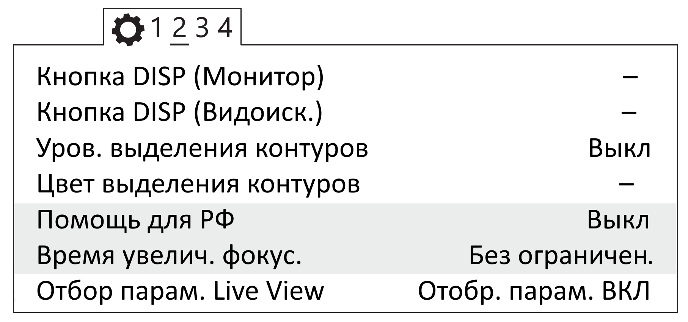

Настройка фотоаппарата¶
Настройка фотоаппарата Sony DSC-RX1¶
Перед выполнением настроек ознакомьтесь с инструкцией по эксплуатации фотоаппарата, в которой описано назначение и использование органов управления.
- Диск режимов установите в положение S (Приоритет выдержки).
- Установите выдержку 1/800.
- Диск коррекции экспозиции установите в положение 0 (ноль).
- Кольцо переключения макро установите в положение 0,3m-∞.
- Диск режима фокусировки установите в положение MF.
Для настройки параметров фотоаппарата нужно нажать кнопку MENU, затем, в соответствии с пунктами ниже, установить требуемые значения.
- В меню фотосъемки (вкладка 1) установите Размер изображения - L24M, Формат - 3:2, Качество – Высокое.

Установка параметров съемки
- В меню пользовательских установок (вкладка 1) отключите Автоматический просмотр.

Отключение автоматического просмотра
- Отключите Помощь для РФ и установите Время увеличения фокусировки - Без ограничений (вкладка 2).

{kind=link}
Отключение помощи для РФ и установка времени увеличения фокусировки
- Установите для кнопки MOVIE - Только режим видео (вкладка 3).

Установка значения «Только режим видео»
- В меню (вкладка 2) установите Время начала энергосбережения - 30 мин .

Установка времени начала энергосбережения
- В меню карты памяти установите Номер файла - Сброс.

Сброс номера файла
- С помощью кнопки Fn (Функция) установите следующие настройки:
| Режим протяжки | Покадровая съемка |
| ISO | Auto |
| диапазон | 100 – 1600 |
| Баланс белого | Авто AWB |
Другие настройки фотоаппарата изменять не требуется.
Для сброса всех настроек выберите следующие пункты меню:
MENU → (Настройка) → [Заводск. настройка] → Инициализировать